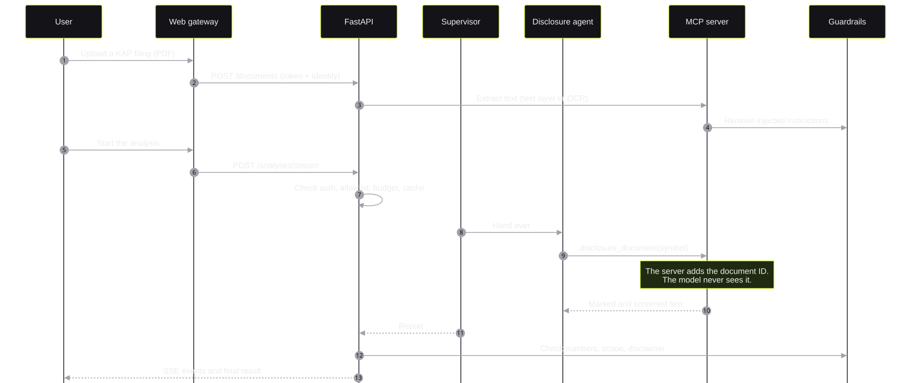

Agentic Investing Engine
An MCP-native multi-agent research systemMCP tabanlı çok ajanlı bir araştırma sistemi
*a research engine that does not trust its own model**kendi modeline körü körüne güvenmeyen bir araştırma motoru*I built a LangGraph supervisor that sends each request to four specialist agents. All tools are on an MCP server, so external clients can use them too. Guardrails screen all third-party text, and a check compares each number in the report with tool data.
Gelen her isteği dört uzman ajana dağıtan bir LangGraph supervisor kurdum. Araçların tamamı bir MCP sunucusunda duruyor; bu sayede harici istemciler de aynı araçları kullanabiliyor. Üçüncü taraf metinler ajana ulaşmadan taranıyor, rapordaki her rakam da araçlardan gelen veriyle karşılaştırılıyor.
- rolerol
- Sole engineer: design, backend, agents, web app and infrastructureProjeyi tek başıma geliştirdim: tasarım, backend, ajanlar, web uygulaması ve altyapı
- stackteknolojiler
- Python · LangGraph · MCP · FastAPI · React/TypeScript · Tesseract OCR · Langfuse · Groq/Ollama · Bicep · GitHub Actions (OIDC)
1. The problem1. Problem
Research on a Borsa Istanbul instrument needs four types of data. These are price indicators, news risk, Turkish macro data and company filings (KAP). Before this project, I combined these data by hand.
An LLM can combine the data and write a report. But an LLM has two known risks. First, it can write a number that is not in the source data. Second, it reads third-party text, and that text can contain a prompt injection.
Borsa İstanbul'daki bir enstrümanı araştırmak için dört farklı veri gerekiyor: fiyat göstergeleri, haber riski, Türkiye makro verileri ve KAP bildirimleri. Bu projeden önce bu verileri elle bir araya getiriyordum.
Verileri birleştirip rapor yazmak bir LLM için kolay bir iş. Ancak iki bilinen riski var: kaynakta olmayan bir rakamı rapora yazabiliyor ve okuduğu üçüncü taraf metinler prompt injection taşıyabiliyor.
I wanted the reasoning of an agent, but I treated all inputs and all outputs of the model as untrusted.
Bir ajanın akıl yürütme gücünden yararlanmak istedim; ama modelin hem girdisini hem çıktısını baştan güvenilmez kabul ettim.
2. Constraints2. Kısıtlar
- Cost: One analysis sends many LLM calls through many agents. Thus the cost of one analysis was not known at the start.
- Data residency: A foreign cloud moves user data out of Turkey. This is a KVKK (Turkish data protection law) question.
- Licensed data only: The engine uses TCMB EVDS, GDELT and files from the user. The code records the terms and the attribution of each source.
- No budget: Both deployment targets must operate without a payment method.
- Maliyet: Tek bir analiz, birden fazla ajan üzerinden çok sayıda LLM çağrısı yapıyor. Başlangıçta bir analizin neye mal olacağını bilmiyordum.
- Verinin yeri: Yurt dışındaki bir bulut, kullanıcı verisini Türkiye dışına çıkarır. Bu doğrudan bir KVKK meselesi.
- Yalnızca lisanslı veri: Motor TCMB EVDS, GDELT ve kullanıcının kendi dosyalarıyla çalışıyor. Her kaynağın kullanım koşulları ve atfı kodda kayıtlı.
- Bütçe yok: İki dağıtım hedefinin de kredi kartı tanımlamadan çalışabilmesi gerekiyordu.
3. Architecture3. Mimari
A LangGraph supervisor reads the request. It selects the specialist agents that the request needs. There are four specialists: technical, news, macro and disclosure. The supervisor can skip a specialist. At the end, the supervisor writes one report.
All capabilities of the engine are on an MCP server. The server has 8 tools, 3 resources and 1 prompt. The agents of the engine find their tools through MCP. An external client, for example Claude Desktop or Cursor, uses the same tools in the same way.
İsteği ilk karşılayan bir LangGraph supervisor. Supervisor, isteğin hangi uzmanlara ihtiyaç duyduğuna karar veriyor: teknik, haber, makro ve bildirim. Gerekmeyen uzmanı atlayabiliyor ve sonunda tek bir rapor yazıyor.
Motorun bütün yetenekleri bir MCP sunucusu üzerinden sunuluyor: 8 araç, 3 kaynak ve 1 prompt. Motorun kendi ajanları da araçlarına MCP üzerinden erişiyor. Yani Claude Desktop ya da Cursor gibi harici bir istemci, motorun ajanlarıyla birebir aynı araçları kullanıyor.

Agent routingAjanların yönlendirilmesi
The supervisor uses the specialists in the sequence that it selects. When all necessary results are available, the supervisor writes the report. Then the engine examines the numbers, the scope and the disclaimer.
Supervisor uzmanları kendi belirlediği sırayla çağırıyor. Gereken bütün sonuçlar toplandığında raporu yazıyor; ardından motor rakamları, kapsamı ve yasal uyarı metnini kontrol ediyor.

4. One analysis from start to end4. Bir analizin baştan sona akışı
The sequence below shows an analysis with an uploaded KAP filing. The gateway adds the internal token. The browser never receives this token. The MCP server adds the document ID on the server side, so the model never sees the ID.
Aşağıdaki akış, kullanıcının bir KAP bildirimi yüklediği bir analizi gösteriyor. Dahili token'ı gateway ekliyor, bu yüzden tarayıcı token'ı hiçbir zaman görmüyor. Doküman ID'si de sunucu tarafında ekleniyor; model bu ID'ye hiç erişmiyor.

5. Key decisions and trade-offs5. Önemli kararlar ve ödünleşimler
| DecisionKarar | Alternative I consideredDeğerlendirdiğim alternatif | ReasonNeden |
|---|---|---|
| Expose all tools through an MCP serverBütün araçları bir MCP sunucusundan sunmak | Plain LangChain function calls inside the graphGrafik içinde düz LangChain fonksiyon çağrıları | One tool layer serves my agents and external clients. I secure one surface only.Tek bir araç katmanı hem kendi ajanlarıma hem harici istemcilere hizmet ediyor; korumam gereken tek bir yüzey kalıyor. |
| Supervisor with four specialistsDört uzman ajanı yöneten bir supervisor | One large agent with all toolsBütün araçlara erişen tek ve büyük bir ajan | Each specialist gets only the tools it needs. This gives least privilege and shorter prompts.Her uzman yalnızca ihtiyaç duyduğu araçları görüyor. Böylece hem yetkiler daralıyor hem prompt'lar kısalıyor. |
| Pattern scan first, classifier optionalÖnce kalıp taraması, sınıflandırıcı isteğe bağlı | Classifier onlyYalnızca sınıflandırıcı | The pattern scan has no cost and no network call. If the classifier fails, the pattern scan stays active.Kalıp taraması bedava ve ağ çağrısı gerektirmiyor. Sınıflandırıcı çökse bile tarama çalışmaya devam ediyor. |
| Read-only agent toolsAjan araçlarının yalnızca okuma yapması | Tools that can open URLs or write dataURL açabilen ya da veri yazabilen araçlar | An injection can change a report. It cannot send data out or do an action.Bir enjeksiyon en fazla raporun içeriğini değiştirebilir; veri sızdıramaz, bir işlem de başlatamaz. |
| Keep the cloud release on holdBulut yayınını bekletmek | Deploy to Azure nowHemen Azure'a dağıtmak | A KVKK data protection review must come first. The release files are ready.Önce KVKK kapsamında bir veri koruma değerlendirmesi gerekiyor. Yayın dosyaları hazır bekliyor. |
GuardrailsGüvenlik katmanları (guardrails)
The engine screens all third-party text before an agent reads it. After the supervisor writes the report, the engine compares each precise number with a value from a tool.
Üçüncü taraf metinlerin tamamı, bir ajan onları okumadan önce taranıyor. Supervisor raporu yazdıktan sonra da rapordaki her kesin rakam bir aracın döndürdüğü değerle karşılaştırılıyor.

- Input screening: The scan finds instruction overrides, role changes, chat markup, tool-call injection and data exfiltration in English and Turkish. It also finds an attack that a PDF line break splits.
- Spotlighting: The engine puts the remaining third-party text inside a boundary with a random ID for each request. It removes all attempts to copy this boundary.
- Numeric grounding: Each precise number in the report must agree with a tool value. The report can discuss the requested symbols only. The engine adds the disclaimer if it is missing.
- Girdi taraması: Talimatları geçersiz kılma girişimlerini, rol değiştirmeyi, sohbet işaretlemelerini, araç çağrısı enjeksiyonunu ve veri sızdırma denemelerini Türkçe ve İngilizce olarak yakalıyor. PDF'teki bir satır sonu saldırıyı ikiye bölse bile tespit ediyor.
- Spotlighting: Taramadan geçen üçüncü taraf metin, her istek için rastgele üretilen bir ID ile işaretlenmiş sınırların içine alınıyor. Bu sınırı taklit etmeye yönelik her girişim metinden temizleniyor.
- Sayısal doğrulama: Rapordaki her kesin rakam bir araç değeriyle örtüşmek zorunda. Rapor yalnızca istenen sembollerden bahsedebiliyor; yasal uyarı eksikse motor onu kendisi ekliyor.
Security modelGüvenlik modeli
- Only the web gateway is public. The gateway keeps the internal API token on the server.
- Each POST request must have a custom header against CSRF. Session cookies are signed and use
SameSite=Lax. - The engine identifies an upload from its first bytes. It applies size, row and page limits. Uploads stay in memory and expire after two hours.
- A production configuration does not start if a setting is not safe, for example when authentication is off.
- GitHub connects to Azure through OIDC. Thus the repository stores no cloud credentials.
- Dışarıya açık olan tek bileşen web gateway. Dahili API token'ı sunucuda kalıyor.
- CSRF'e karşı her POST isteğinde özel bir header zorunlu. Oturum çerezleri imzalı ve
SameSite=Laxayarlı. - Yüklenen dosyanın türü uzantısına değil ilk byte'larına bakılarak belirleniyor. Boyut, satır ve sayfa sınırları uygulanıyor; dosyalar yalnızca bellekte tutuluyor ve iki saat sonra siliniyor.
- Güvenli olmayan bir ayar varsa, örneğin kimlik doğrulama kapalıysa, production yapılandırması hiç ayağa kalkmıyor.
- GitHub, Azure'a OIDC ile bağlanıyor; bu sayede repoda hiçbir bulut kimlik bilgisi saklanmıyor.
6. Testing and evaluation6. Test ve değerlendirme
- Unit and end-to-end tests: More than 220 tests with more than 90% coverage. A scripted chat model operates the real supervisor and the real MCP server. Thus the tests need no network, GPU or model.
- Red-team set: 19 English and Turkish attacks and 12 normal sentences.
- OCR evaluation: Character and word error rates on text with skew, blur, noise and JPEG damage.
- Token profile: A script measures the tokens and LLM calls of one full analysis.
- Birim ve uçtan uca testler: 220'yi aşkın test, %90'ın üzerinde kapsama. Senaryolu bir sohbet modeli, gerçek supervisor'ı ve gerçek MCP sunucusunu çalıştırıyor. Bu sayede testler ağ, GPU ya da gerçek bir model olmadan koşabiliyor.
- Red-team seti: Türkçe ve İngilizce 19 saldırı ile 12 masum cümle.
- OCR değerlendirmesi: Eğik, bulanık, gürültülü ve JPEG bozulması olan metinlerde karakter ve kelime hata oranları.
- Token profili: Tam bir analizin kaç token ve kaç LLM çağrısı harcadığını ölçen bir script.
7. Results7. Sonuçlar
8. Limitations and next steps8. Sınırlar ve sonraki adımlar
- The engine operates as a local system. The cloud release waits for a KVKK review.
- A RSI backtest on five BIST equities showed 87.2% correct bullish signals but only 45.0% correct bearish signals. Thus the engine does not present RSI as a strong bearish signal.
- Next steps: basket analytics, remote MCP access with OAuth 2.1, and table extraction from scanned financial statements.
- Motor şu an yerel bir sistem olarak çalışıyor. Bulut yayını KVKK değerlendirmesini bekliyor.
- Beş BIST hissesi üzerinde yaptığım RSI backtest'inde yükseliş sinyalleri %87,2 oranında tuttu, düşüş sinyalleri ise yalnızca %45,0. Bu nedenle motor RSI'ı güçlü bir düşüş sinyali olarak sunmuyor.
- Sıradaki adımlar: sepet analitiği, OAuth 2.1 ile uzaktan MCP erişimi ve taranmış finansal tablolardan tablo çıkarımı.
9. Design Q&A9. Tasarım üzerine sorular
Why did you use MCP instead of normal function calls?Neden normal fonksiyon çağrıları yerine MCP?
MCP makes the tools independent of my agent graph. My supervisor and an external client such as Claude Desktop use the same 8 tools. I write and secure the tools one time.
MCP, araçları ajan grafiğimden bağımsız hale getiriyor. Kendi supervisor'ım da Claude Desktop gibi harici bir istemci de aynı 8 aracı kullanıyor. Araçları bir kez yazıp bir kez güvence altına alıyorum.
How do you stop the model from inventing numbers?Modelin rakam uydurmasını nasıl engelliyorsun?
After the report is complete, a check compares each precise number with a value that a tool returned. The API returns the result of this check with the analysis. Langfuse also records it as a trace score.
Rapor tamamlandıktan sonra bir kontrol, içindeki her kesin rakamı araçların döndürdüğü değerlerle karşılaştırıyor. Kontrolün sonucu analizle birlikte API'den dönüyor ve Langfuse'a trace skoru olarak da kaydediliyor.
What happens if a prompt injection passes the screening?Bir prompt injection taramayı atlatırsa ne olur?
All agent tools are read-only, and no tool can open a URL that the model selects. Thus a successful injection can change the text of a report. It cannot send data out or do an action.
Ajanların bütün araçları yalnızca okuma yapıyor ve hiçbiri modelin seçtiği bir URL'yi açamıyor. Başarılı bir enjeksiyon olsa bile en fazla raporun metnini değiştirebilir; veri sızdıramaz, bir işlem de başlatamaz.
How did you control the cost?Maliyeti nasıl kontrol altında tuttun?
I added per-user daily budgets, a circuit breaker for provider rate limits and Langfuse tracing. Then I measured one full analysis. It used about 15,800 tokens and 11 LLM calls, which is USD 0.003 on the paid tier.
Kullanıcı başına günlük bütçe, sağlayıcının rate limit'ine takılınca devreye giren bir circuit breaker ve Langfuse tracing ekledim. Ardından tam bir analizi ölçtüm: yaklaşık 15.800 token ve 11 LLM çağrısı. Bu, ücretli katmanda analiz başına 0,003 dolar ediyor.
Why is the project not deployed?Proje neden henüz yayında değil?
A deployment on a foreign cloud moves the data of Turkish users out of Turkey. Under KVKK, this needs a data protection review first. The infrastructure code and 220+ tests keep the release ready.
Yurt dışındaki bir bulut, Türk kullanıcıların verisini ülke dışına çıkarır ve KVKK bunun için önce bir veri koruma değerlendirmesi ister. Altyapı kodu ve 220'yi aşkın test sayesinde yayın her an hazır.